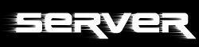

Intern

Lan
Fürs Lan haben wir unseren eigenen Quake 2 Battleground Server. Es ist ein Pentium 200 mit 48 MB Ram und einer 2 GB Festplatte. Er läuft unter SuSE Linux 6.1. Auf ihm läuft ein Q2 Battleground Server für 10 Personen und ein Quake 3 Arena Tourney Server. Damit wir auch wirklich kein einziges Megaherz des Servers ungenutzt lassen habe ich noch einen FTP Server darauf installiert der allerdings nicht viel bringt da er ständig voll ist ;)Internet
Im Internet haben wir leider noch keinen eigenen Server. Unsere Mitglieder findet man meißtens auf einem der Server von der GXP Q2 Gamespy Master Server List (in Gamespy: Add Master Server List/q2master.gxp.de) oder auf einem der Server von der MIB Server ListBlackybe